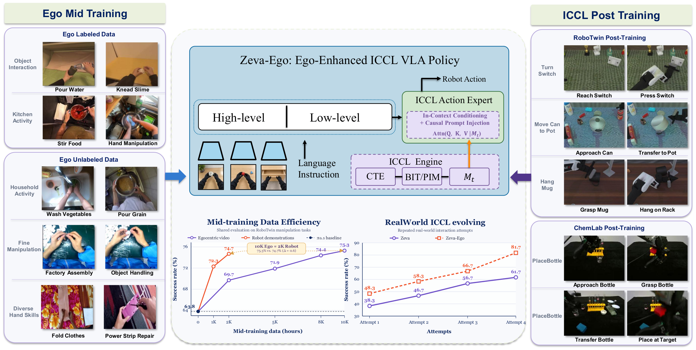
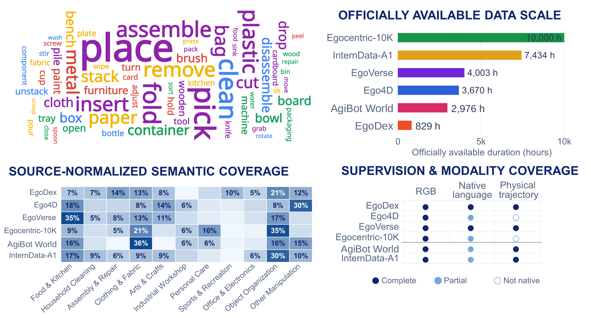
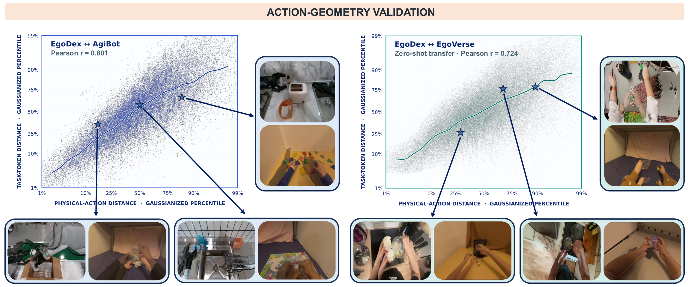
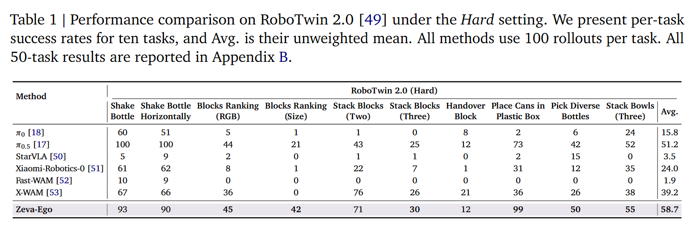
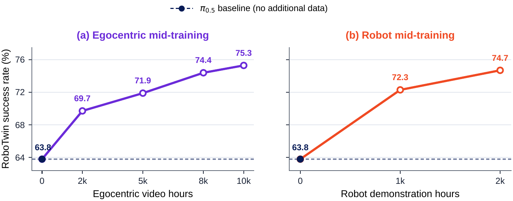
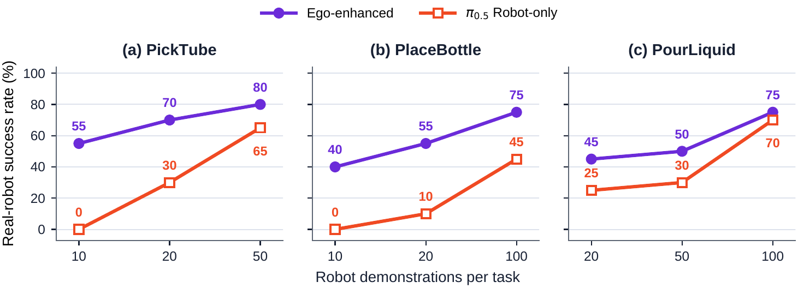
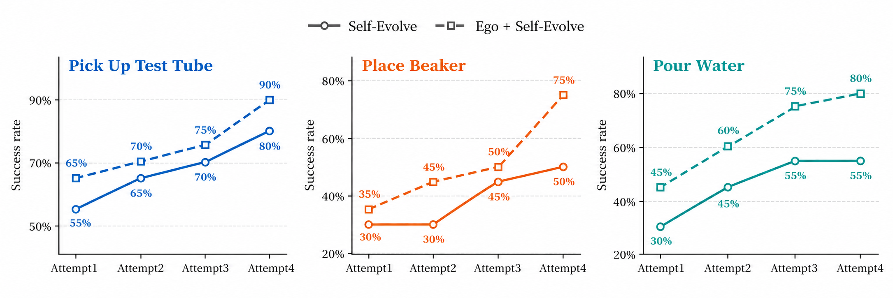

Egocentric experience for robot manipulation
Zeva-Ego transfers scalable physical experience from egocentric video to robot policies, then improves through causal feedback collected during deployment.

Abstract
Egocentric video offers a scalable source of physical interaction experience, yet translating it into robot-executable knowledge and enabling continual adaptation remain challenging. We introduce Zeva-Ego, a unified framework that learns physical priors from human experience and evolves through robot interaction. An Action-Centric Encoder (ACE) converts egocentric visual transitions into action-centered supervision for VLA mid-training, while In-Context Causal Learning (ICCL) enables parameter-free adaptation from action-effect feedback at deployment. Scaling Ego data to 10K hours improves RoboTwin success from 63.8% to 75.3%, matching 2K hours of robot demonstrations (74.7%), corresponding to an empirical data ratio of roughly 4–5 : 1. With accumulated interaction experience, ICCL further improves success from 58% to 89% within four attempts without parameter updates. These results demonstrate a scalable path toward embodied intelligence that learns from human experience and continuously improves through its own interaction.
Method
Zeva-Ego combines scalable offline human experience with online causal adaptation.
Action-Centric Encoding
ACE converts visual transitions into continuous action tokens while separating task-relevant motion from environment variation and preserving physical-action geometry across domains.
Egocentric Mid-Training
Labeled and unlabeled egocentric video provide camera-frame action and language supervision, transferring scalable human interaction experience into the VLA policy.
ICCL Post-Training
Action-effect feedback is accumulated as causal context and injected into the Action Expert, enabling improvement across attempts without parameter updates.
Ego Data
Our mid-training mixture spans diverse tasks, environments, supervision types, and more than 10K hours of egocentric experience.

Robot–Ego Task Correspondence
Select a task to compare one continuous robot rollout with four synchronized egocentric demonstrations.
Pick Tube
The robot rollout loops continuously and independently of the Ego examples.
Egocentric Demonstrations
Each clip holds on its final frame; all four restart together after the longest clip finishes.
Action-Centric Representation Geometry
ACE preserves physical-action similarity across human and robot embodiments and transfers to unseen egocentric visual domains.

Results
Scaling egocentric experience improves the offline physical prior, complements embodiment-specific robot data, and strengthens adaptation across repeated attempts.
Successful task execution
RoboTwin 2.0 under the Hard setting

Scalable physical priors from egocentric video
10K hours of Ego video raises RoboTwin success from 63.8% to 75.3%, revealing an empirical data ratio of approximately 4–5 hours of Ego video per hour of Robot demonstrations.

Ego experience complements robot demonstrations
When Robot demonstrations are expensive to collect, a small amount of Robot data can be combined with abundant Ego experience to achieve strong downstream performance.

ICCL improves performance across attempts
Ego-derived causal representations support more consistent cross-attempt improvement without updating policy parameters.

BibTeX
If you find Zeva-Ego useful,
please cite our work.
@misc{huang2026zevaego,
title = {{Zeva-Ego}: Egocentric Mid-Training with
In-Context Causal Learning for Robot Manipulation},
author = {Huang, Bingjia and Ding, Xin and Chen, Fu and
Li, Kun and Sun, Wei and Wu, Hao and
Liu, Yunxin and Cao, Ting},
year = {2026},
url = {https://air-embodied-brain.github.io/Zeva-Ego/}
}